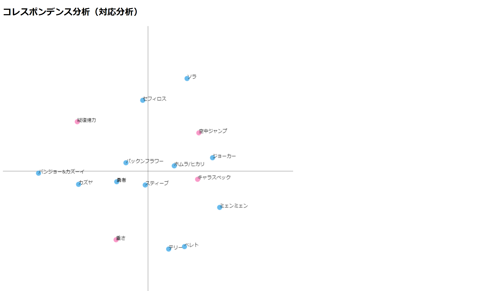

第5回

コレスポンデンス分析ファイル
今回のコレスポンデンス分析ではスマブラのキャラクター約80体を分析しようとしたがA列の対象が多いせいか何回も試しても「エラー」表示になってしまうため 課金キャラクター12体に絞り分析を行った。キャラスペックに近いホムラ&ヒカリは初心者でも非常に使いやすくスペックが高いキャラクターだとわかる。しかし、 今回の分析では横軸の項目が分析に対してあまり相応しくないと後々感じた。分析には項目も大切だと思った。
成海